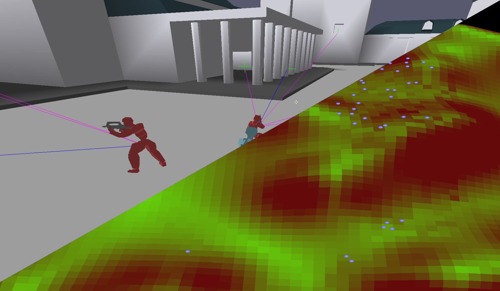

Lab task - Week 1

- C++
- PREDATOR | AIBodyGuard
This Lab Task blog post will provide a short overview of what I found while investigating the AI behaviour in both Predator_prey and Body Guard AI demo, provided thorugh out the Lab Task sheet.